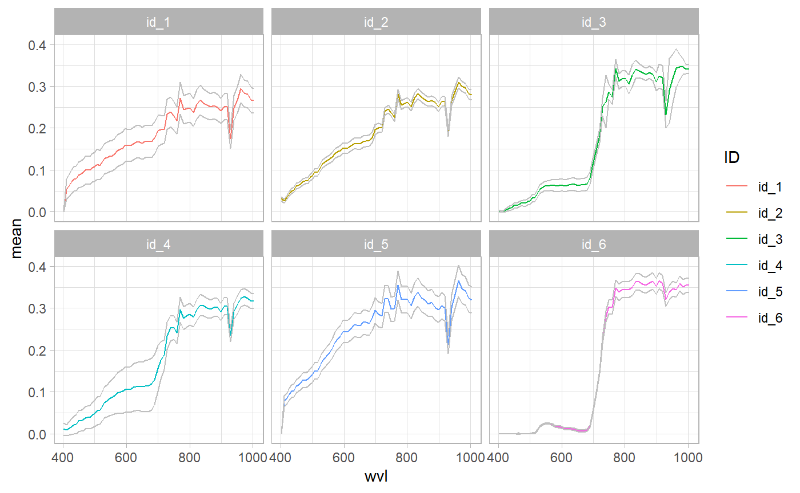
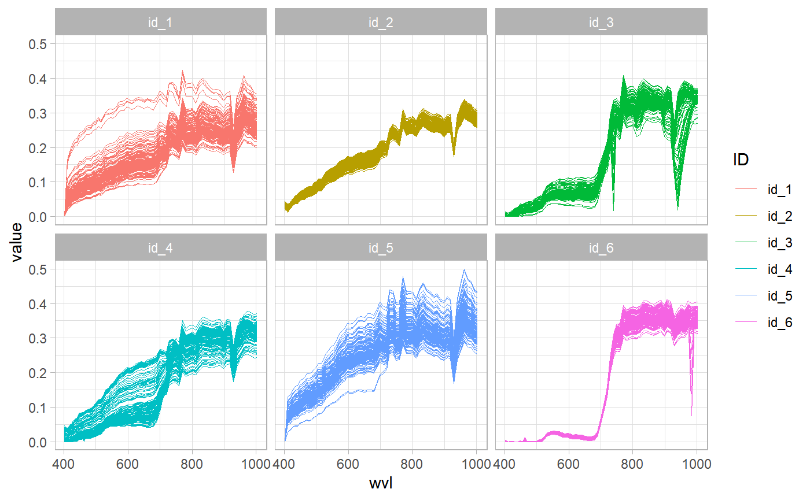

Importing Level 1 Data
Source:vignettes/Extracting-data-over-vector.Rmd
Extracting-data-over-vector.Rmdprismaread provides a very efficient function based on package exactextractr(https://github.com/isciences/exactextractr) for extracting and summarizing data from the converted hyperspectral cubes over features of vector spatial files. The function allows to compute several statistics, as well as extracting all pixel values, and to save them to RData, CSV or EXCEL files (See documentation of the prisma_extract_spectra() function for info on available arguments).
For example, starting from a VNIR Cube obtained with convert_prisma and a vector polygon file:
library(prismaread) library(ggplot2) in_file <- "D:/prismaread/L2D/testL2D_HCO_VNIR.envi" in_vect <- "D:/prismaread/test/testpoints_l2d_polys.gpkg" # extract base statistics, in "long" format test <- prisma_extract_spectra(in_file, in_vect) test #> # A tibble: 396 x 4 #> wvl ID mean stdev #> <dbl> <chr> <dbl> <dbl> #> 1 402. id_1 0 0 #> 2 411. id_1 0.0538 0.0236 #> 3 419. id_1 0.0636 0.0267 #> 4 427. id_1 0.0724 0.0282 #> 5 434. id_1 0.0786 0.0294 #> 6 441. id_1 0.0797 0.0296 #> 7 449. id_1 0.0880 0.0311 #> 8 456. id_1 0.0898 0.0314 #> 9 464. id_1 0.0937 0.0322 #> 10 471. id_1 0.0995 0.0332 #> # ... with 386 more rows # plot results using ggplot ggplot(test, aes(x = wvl, y = mean)) + geom_line(aes(color = ID, group = ID)) + facet_wrap(~ID) + theme_light()

# extract base statistics ands save results as excel file, in "wide" format test <- prisma_extract_spectra(in_file, in_vect, out_file = "D:/Temp/test1.xlsx", stats_format = "wide") test #> # A tibble: 66 x 13 #> wvl mean_id_1 stdev_id_1 mean_id_2 stdev_id_2 mean_id_3 stdev_id_3 #> <dbl> <dbl> <dbl> <dbl> <dbl> <dbl> <dbl> #> 1 402. 0 0 0.0316 0.00469 0.00193 0.00254 #> 2 411. 0.0538 0.0236 0.0257 0.00479 0.000420 0.00117 #> 3 419. 0.0636 0.0267 0.0346 0.00494 0.00177 0.00278 #> 4 427. 0.0724 0.0282 0.0436 0.00531 0.00539 0.00413 #> 5 434. 0.0786 0.0294 0.0500 0.00569 0.00858 0.00507 #> 6 441. 0.0797 0.0296 0.0527 0.00610 0.00965 0.00544 #> 7 449. 0.0880 0.0311 0.0615 0.00640 0.0147 0.00615 #> 8 456. 0.0898 0.0314 0.0630 0.00648 0.0148 0.00619 #> 9 464. 0.0937 0.0322 0.0669 0.00681 0.0172 0.00629 #> 10 471. 0.0995 0.0332 0.0721 0.00712 0.0202 0.00651 #> # ... with 56 more rows, and 6 more variables: mean_id_4 <dbl>, #> # stdev_id_4 <dbl>, mean_id_5 <dbl>, stdev_id_5 <dbl>, mean_id_6 <dbl>, #> # stdev_id_6 <dbl> # extract custom statistics test <- prisma_extract_spectra(in_file, in_vect, selstats = c("mean", "coeffvar", "stdev", "min", "max")) test #> # A tibble: 396 x 7 #> wvl ID mean coeffvar stdev min max #> <dbl> <chr> <dbl> <dbl> <dbl> <dbl> <dbl> #> 1 402. id_1 0 NaN 0 0 0 #> 2 411. id_1 0.0538 0.439 0.0236 0.0190 0.164 #> 3 419. id_1 0.0636 0.419 0.0267 0.0263 0.192 #> 4 427. id_1 0.0724 0.390 0.0282 0.0336 0.211 #> 5 434. id_1 0.0786 0.374 0.0294 0.0383 0.223 #> 6 441. id_1 0.0797 0.371 0.0296 0.0383 0.225 #> 7 449. id_1 0.0880 0.353 0.0311 0.0443 0.242 #> 8 456. id_1 0.0898 0.350 0.0314 0.0455 0.244 #> 9 464. id_1 0.0937 0.343 0.0322 0.0484 0.251 #> 10 471. id_1 0.0995 0.333 0.0332 0.0526 0.262 #> # ... with 386 more rows # plot results using ggplot ggplot(test, aes(x = wvl)) + geom_line(aes(y = mean, color = ID, group = ID)) + geom_line(aes(y = mean + stdev, group = ID), color = "grey75") + geom_line(aes(y = mean - stdev, group = ID), color = "grey75") + facet_wrap(~ID) + theme_light()

# extract custom statistics and quantiles test <- prisma_extract_spectra(in_file, in_vect, quantiles = TRUE, selstats = c("mean", "stdev")) test #> # A tibble: 396 x 9 #> wvl ID mean stdev quant_5 quant_25 quant_50 quant_75 quant_95 #> <dbl> <chr> <dbl> <dbl> <dbl> <dbl> <dbl> <dbl> <dbl> #> 1 402. id_1 0 0 0 0 0 0 0 #> 2 411. id_1 0.0538 0.0236 0.0270 0.0385 0.0485 0.0583 0.0878 #> 3 419. id_1 0.0636 0.0267 0.0339 0.0487 0.0573 0.0691 0.104 #> 4 427. id_1 0.0724 0.0282 0.0431 0.0566 0.0663 0.0782 0.116 #> 5 434. id_1 0.0786 0.0294 0.0479 0.0616 0.0720 0.0847 0.123 #> 6 441. id_1 0.0797 0.0296 0.0487 0.0627 0.0729 0.0860 0.124 #> 7 449. id_1 0.0880 0.0311 0.0551 0.0704 0.0809 0.0947 0.135 #> 8 456. id_1 0.0898 0.0314 0.0575 0.0718 0.0827 0.0962 0.136 #> 9 464. id_1 0.0937 0.0322 0.0598 0.0760 0.0864 0.0993 0.142 #> 10 471. id_1 0.0995 0.0332 0.0652 0.0807 0.0918 0.106 0.150 #> # ... with 386 more rows # extract also all pixels test <- prisma_extract_spectra(in_file, in_vect, allpix = TRUE, selstats = c("mean", "stdev")) # stats are saved in the "stats" slot of the output test$stats #> # A tibble: 396 x 4 #> wvl ID mean stdev #> <dbl> <chr> <dbl> <dbl> #> 1 402. id_1 0 0 #> 2 411. id_1 0.0538 0.0236 #> 3 419. id_1 0.0636 0.0267 #> 4 427. id_1 0.0724 0.0282 #> 5 434. id_1 0.0786 0.0294 #> 6 441. id_1 0.0797 0.0296 #> 7 449. id_1 0.0880 0.0311 #> 8 456. id_1 0.0898 0.0314 #> 9 464. id_1 0.0937 0.0322 #> 10 471. id_1 0.0995 0.0332 #> # ... with 386 more rows # pixel values are saved in the "allpix" slot of the output test$allpix #> # A tibble: 68,508 x 4 #> ID wvl pixel value #> <chr> <dbl> <chr> <dbl> #> 1 id_1 402. pix_001 0 #> 2 id_1 411. pix_001 0.0731 #> 3 id_1 419. pix_001 0.0823 #> 4 id_1 427. pix_001 0.0900 #> 5 id_1 434. pix_001 0.0960 #> 6 id_1 441. pix_001 0.0977 #> 7 id_1 449. pix_001 0.106 #> 8 id_1 456. pix_001 0.108 #> 9 id_1 464. pix_001 0.113 #> 10 id_1 471. pix_001 0.120 #> # ... with 68,498 more rows ggplot(test$allpix, aes(x = wvl)) + geom_line(aes(y = value, group = pixel, color = ID), lwd = 0.01) + facet_wrap(~ID) + theme_light()
